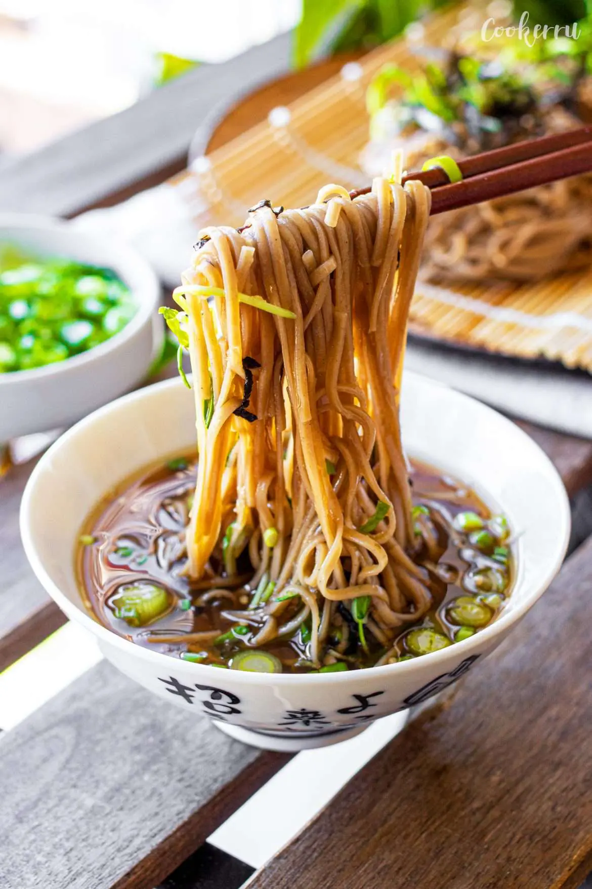

Zaru Soba
ざるそば

This cheap & easy zaru soba recipe features cold soba noodles dipped in Tsuyu sauce.
This light and refreshing meal takes only a few minutes to prepare, and is perfect for a hot summer day.
Soba is very healthy and naturally gluten-free.
Ingredients (serves two)
Noodles and Garnish
- 2 bundles of noodles
- shredded seaweed
- toasted sesame seeds
- thinnly sliced green onion
Dipping Sauce
- 1 cup dashi
- 1/4 cup soy sauce
- 1/4 cup mirin
- 1 Tbs sugar
- squirt of lime juice or yuzu extract
Instructions
- Add dashi, soy sauce, mirin, juice, and sugar into a saucepan and mix to combine.
- Boil the mixture, then remove from heat and place in the fridge or freezer to cool.
- Cook soba noodles according to package instructions
- Drain noodles after cooking and wash with cool water to remove starch and cool noodles
- Garnish to taste and enjoy!